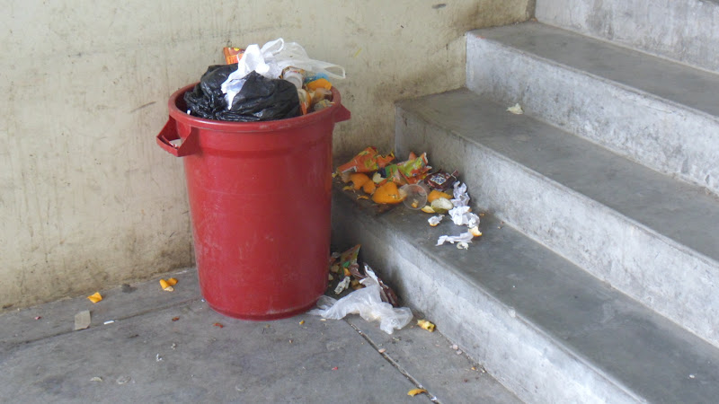
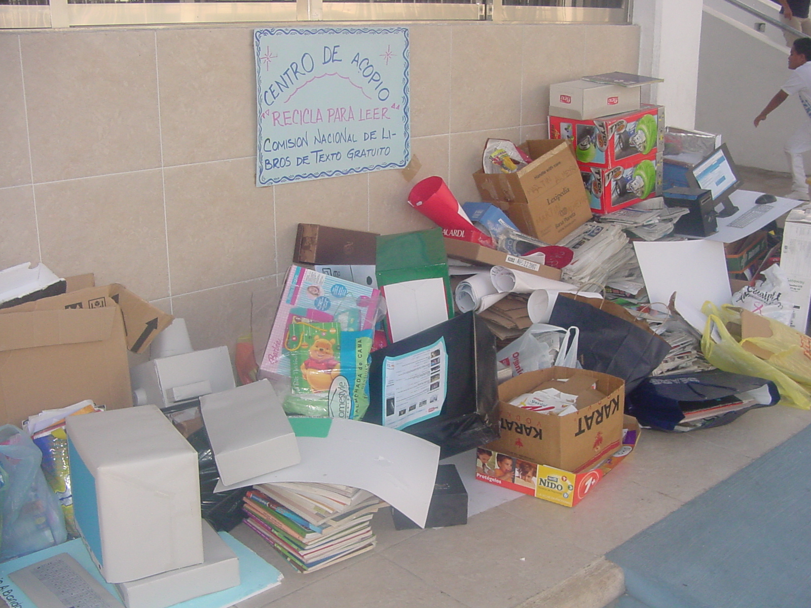

En la comunidad se generan varios tipos de residuos, entre ellos estan los organicos que son los restos de comida , las càscaras de fruta y verdura, las hojas y el pasto de jardin, ya que vienen de la preparaciòn de alimentos como los restos de comida.
Por otro lado, los residuos inorgànicos reciclables son los maeteriales que pueden transformarse
entre ellos se encuentran las botellas de plastico, las latas de aluminio, el papel, el carton
y las botellas de vidrio.
estos materiales son muy comunes en la comunidad porque se usan en las escuelas,
las tiendas y los hogares.
Y por ultimo existen los residuos no reciclables que no se pueden reutilizar, como el papel higienico los pañales, las envolturas de frutas y unicel, estos materiales son muy comunes en la comunidad porque se usan en las escuelas, las tiendas y los hogares.

donde se acumula más basura en nuestra comunidad es en los puntos de recolección asignados, pero también se puede encontrar basura en las calles, en los parques y en los ríos. La basura que se acumula en estos lugares puede ser peligrosa para la salud de las personas y de los animales, ya que puede atraer plagas y enfermedades, pero también puede contaminar el agua y el suelo.

Uno de los lugares donde más se acumulan los residuos son los terrenos baldíos, porque algunas personas los utilizan como basureros clandestinos y arrojan bolsas de basura, botellas de plástico, latas, muebles viejos, escombros y otros materiales, también en las calles se pueden encontrar envolturas de comida, vasos desechables, papeles y botellas que son arrastrados por el viento y la lluvia
algunos de los lugares donde se acumulan más basura son:
Actualmente, la acumulación de basura en la comunidad genera varios problemas ambientales, sociales y económicos. La basura que se acumula en las calles, parques y ríos puede contaminar el agua, el suelo y el aire, afectando la salud de las personas y de los animales. Además, la acumulación de basura puede atraer plagas y enfermedades, lo que representa un riesgo para la salud pública.
por otra parte la falta de educación ambiental contribueye a los problemas de gestión de residuos, con esto se puede mejorar la conciencia y el comportamiento de los ciudadanos respecto a la gestión adecuada de los residuos, todos estos problemas pueden ser abordados
Volver arriba